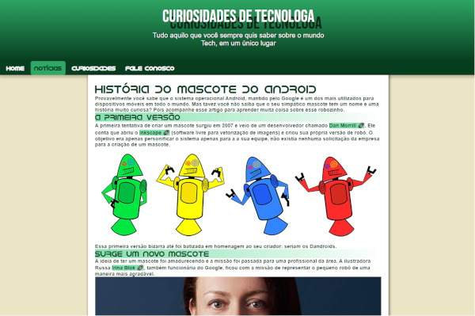

PROJETOS EM
DESTAQUES
Whiteplace
Página de uma desenvolvedora de sites, inspirada em um modelo da internet. Nele, foram aplicados os conhecimentos de animações utilizando CSS, em um site de multiplas páginas.
visibility code

Curiosidades de tecnologia
Página responsiva, desenvolvida durante as aulas do Curso em Vídeo. Utilizando as tecnologias HTML e CSS, aplicando conceitos de media query.
visibility code